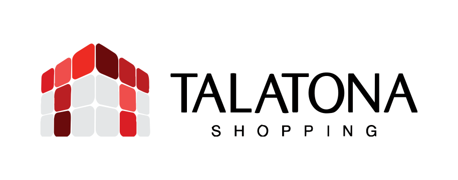

Portefólio
Experiência comprovada no terreno
Redes de gás projectadas, instaladas e mantidas pela nossa equipa em fábricas, hotéis, centros comerciais e condomínios, com a segurança como regra em cada etapa.


Cada projecto começa por um estudo técnico
Antes de instalar, estudamos o local, o consumo e as normas aplicáveis. Assim, a rede fica segura desde o primeiro dia e preparada para crescer.
20+
Anos de experiência
300+
Instalações por ano
24/7
Assistência técnica
Clientes que confiam em nós





Tem um projecto de gás?
Diga-nos o que precisa. A nossa equipa técnica analisa o seu caso e responde com uma proposta.